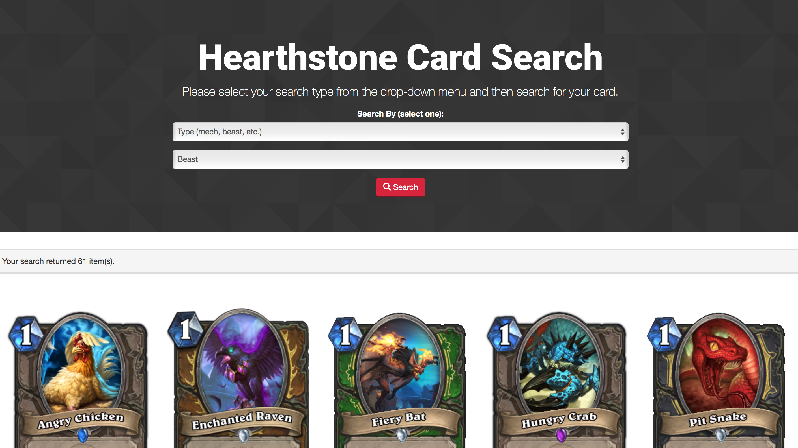
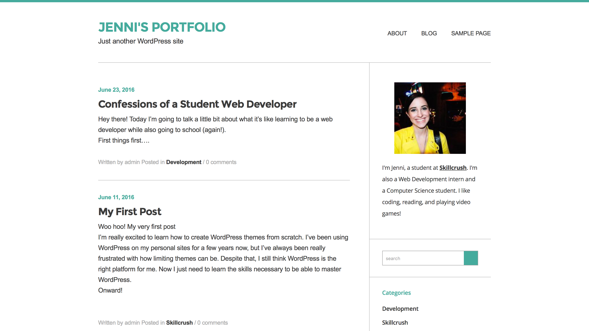
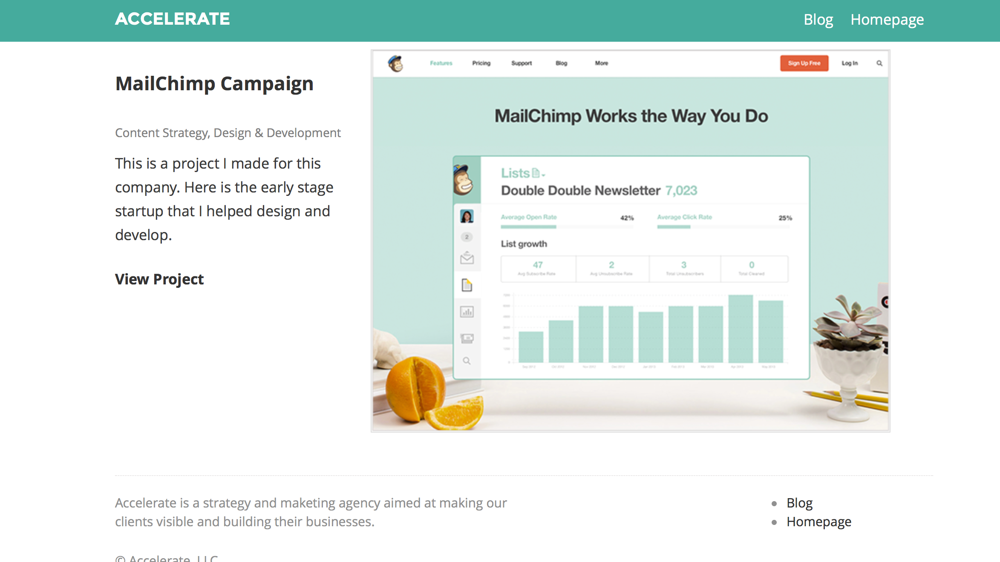

A card search application for the video game "Hearthstone". I created this project as a way to practice using JavaScript and to learn how to consume an API using AJAX. Project built with HTML, CSS, JavaScript, and jQuery. To view the project files on github click the image below.
My first WordPress theme, I built this as a part of my Skillcrush WordPress Developer Blueprint. The site is meant to be a personal portfolio and blog, but I ultimately decided to use it simply as a practice and it is not currently in use. Project built with HTML, CSS, and PHP. To view the project files on github click the image below.
This project was a part of my Skillcrush WordPress Developer Blueprint. For this particular page, I created a new case study page for a fictional client so they could feature their previous work on their WordPress Site. Project built with PHP, HTML, and CSS.
